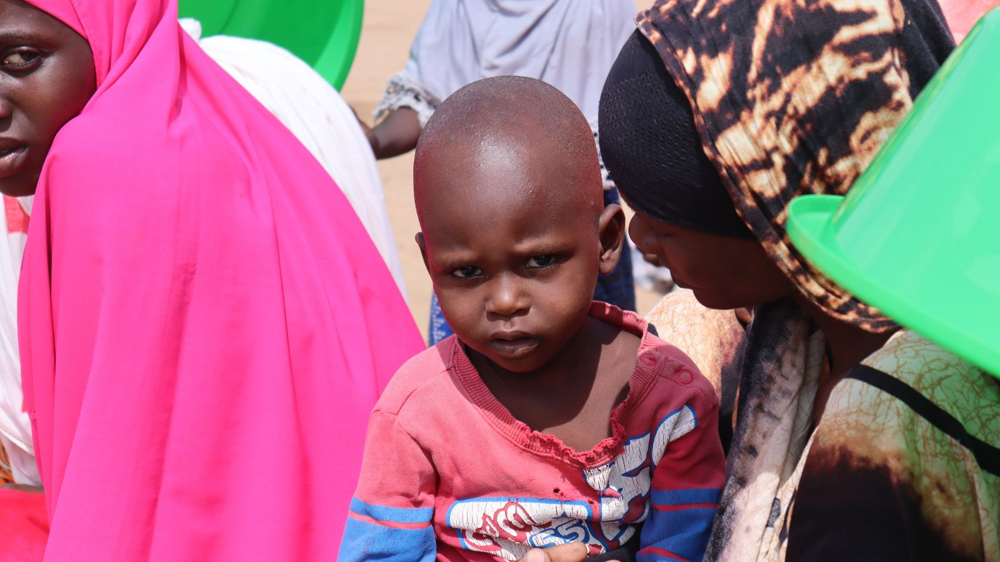

3,000-3,500
Meals Served

Programs / Ramadhan Cooked Meals
This seasonal program provides cooked iftar meals in informal settlements and high-need communities.
Through local kitchens, volunteers, and community coordination, we prioritize widows, orphans, and low-income households during Ramadhan.
Meals Served
Days of Service
Counties Covered

Partner kitchens prepare balanced cooked meals for daily distribution.
Volunteer teams deliver meals at community collection points.
Simple accountability records ensure fair and consistent outreach.
Snapshots from cooking stations, volunteer dispatch points, and community iftar handovers.



Short clips that capture volunteer mobilization and meal delivery during Ramadhan.
Your support expands daily meal capacity throughout Ramadhan.